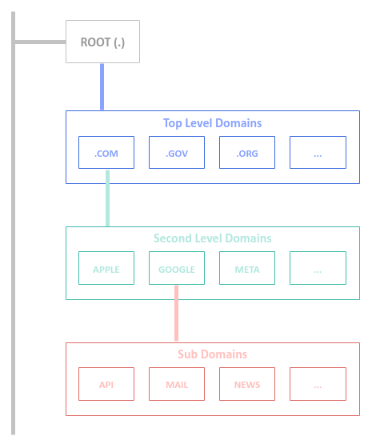

| PolarSPARC |
Primer on Domain Name System (DNS)
| Bhaskar S | 10/17/2026 |
Overview
The Doman Name System (or DNS) is a distributed, hierarchical, replicated database, which maps a human-readable domain name (such as example.com) to network IP address(es). It is a general purpose network lookup service that runs on UDP (as well as TCP) network port 53.
DNS is a client-server protocol, where the client is referred to as the Resolverand the server is called the Name Server.
Every domain name is a label path, read from the right to the left, starting with a trailing . (dot) - 'www.example.com.'. The part 'example.com' is the Domain Name and the part 'api.example.com' is the sub-domain.
Every DNS lookup starts at a Root Server (.), the dot. There are 13 root server clusters across the globe, operated by different organizations, such as, ICANN, VeriSign, etc.
The root server(s) direct the DNS lookup to the Top Level Domain (or TLD for short) based on the last part of the domain main, such as .com, .edu, .gov, .net, .org, etc.
Each of the TLD server knows about all the domains registered under them. For example, the TLD for .com knows where to find the the second-level domain server(s), such as example.com. It is the domain name, like example.com, that one needs to purchase and register in a Name Server.
The following illustration depicts the hierarchical Domain Name model:

DNS uses different type of records to configure specific pieces of information that are associated with a domain.
Each record has a name, a type, a value, and a time-to-live (TTL) associated with it. Note that the TTL tells the resolvers how long they can cache a DNS lookup result. TTL values are in seconds.
Each record type has the generic form: <domain> <TTL> <class> <type> <DATA>
The following are some of the most common used record types in DNS:
A : Maps a domain name to an ipv4 address
Example:
www.example.com. 300 IN A 35.105.115.125
AAAA : Maps a domain name to an ipv6 address
Example:
www.example.com. 300 IN AAAA 2605:2705:275:75:2605:2505:2405:1305
CNAME : Aliases one domain name to another aomain name
Example:
www.example.com. 300 IN CNAME app275.github.io.
MX : Specifies the SMTP mail server(s) for a domain
Example:
example.com. IN MX 10 mail.example.com.
example.com. IN MX 10 backup-mail.example.com.
TXT : Stores arbitrary textual information that is used for domain verification or email authentication
Example:
example.com. 3600 IN TXT "v=DKIM1; k=rsa; p=af032780eb..."
NS : Declares the authoritative name server(s) for a domain
Example:
example.com. 3600 IN NS ns1.herokudns.com.
example.com. 3600 IN NS ns2.herokudns.com.
CAA : Restricts which Certificate Authorities are permitted to issue certificates for a domain
Example:
example.com. IN CAA 0 issue "digicert.com"
Note that a Name Server is the source of truth that actually holds the DNS record(s) for a domain.
The resolver in any OS is the DNS server that does the recursive lookup by following up the search path: Root => TLD => Authoritative name server(s).
Given we now understand the core pieces of DNS, the following are the steps taken by a browser to resolve a domain name to its corresponding networkIP address:
01: The browser checks its own DNS cache
02: If not found, the browser asks the OS, which checks its own DNS cache (and the system hosts file)
03: If not found, the OS sends the query to the recursive resolver (usually the ISP's)
04: The resolver checks its cache and returns the answer if it has one
05: Otherwise, the resolver asks a root server, which refers it to the .com TLD server
06: The TLD server refers the resolver to the authoritative name servers (from the NS records)
07: The authoritative server returns the A/AAAA record, or a CNAME, in which case the resolver looks up the target name
08: The resolver caches the answer and returns it to the OS
09: The OS caches it and returns it to the browser
10: The browser caches the IP and opens a connection to it
Hands-on DNS
All the command executions will be on a Ubuntu 24.04 LTS based Linux desktop.
The two main commands we will use: dig and resolvectl.
We will start by using the dig command first.
To lookup the DNS A record for the domain example.com, execute the following command in a terminal window:
$ dig example.com A
The following would be the typical output:
; <<>> DiG 9.18.39-0ubuntu0.24.04.8-Ubuntu <<>> example.com ;; global options: +cmd ;; Got answer: ;; ->>HEADER<<- opcode: QUERY, status: NOERROR, id: 48309 ;; flags: qr rd ra; QUERY: 1, ANSWER: 2, AUTHORITY: 13, ADDITIONAL: 7 ;; OPT PSEUDOSECTION: ; EDNS: version: 0, flags:; udp: 65494 ;; QUESTION SECTION: ;example.com. IN A ;; ANSWER SECTION: example.com. 95 IN A 172.66.147.243 example.com. 95 IN A 104.20.23.154 ;; AUTHORITY SECTION: . 77962 IN NS g.root-servers.net. . 77962 IN NS f.root-servers.net. . 77962 IN NS m.root-servers.net. . 77962 IN NS h.root-servers.net. . 77962 IN NS j.root-servers.net. . 77962 IN NS k.root-servers.net. . 77962 IN NS e.root-servers.net. . 77962 IN NS i.root-servers.net. . 77962 IN NS a.root-servers.net. . 77962 IN NS d.root-servers.net. . 77962 IN NS c.root-servers.net. . 77962 IN NS b.root-servers.net. . 77962 IN NS l.root-servers.net. ;; ADDITIONAL SECTION: c.root-servers.net. 171658 IN A 192.33.4.12 j.root-servers.net. 171660 IN A 192.58.128.30 k.root-servers.net. 171659 IN A 193.0.14.129 c.root-servers.net. 171658 IN AAAA 2001:500:2::c j.root-servers.net. 171660 IN AAAA 2001:503:c27::2:30 k.root-servers.net. 171659 IN AAAA 2001:7fd::1 ;; Query time: 11 msec ;; SERVER: 127.0.0.53#53(127.0.0.53) (UDP) ;; WHEN: Sat Oct 17 16:59:47 EDT 2026 ;; MSG SIZE rcvd: 415
To lookup the authoritative Name Server(s) for the domain example.com, execute the following command in the terminal window:
$ dig example.com NS
The following would be the typical output:
; <<>> DiG 9.18.39-0ubuntu0.24.04.8-Ubuntu <<>> example.com NS ;; global options: +cmd ;; Got answer: ;; ->>HEADER<<- opcode: QUERY, status: NOERROR, id: 49486 ;; flags: qr rd ra; QUERY: 1, ANSWER: 2, AUTHORITY: 0, ADDITIONAL: 1 ;; OPT PSEUDOSECTION: ; EDNS: version: 0, flags:; udp: 65494 ;; QUESTION SECTION: ;example.com. IN NS ;; ANSWER SECTION: example.com. 86400 IN NS elliott.ns.cloudflare.com. example.com. 86400 IN NS hera.ns.cloudflare.com. ;; Query time: 14 msec ;; SERVER: 127.0.0.53#53(127.0.0.53) (UDP) ;; WHEN: Sat Oct 17 17:08:14 EDT 2026 ;; MSG SIZE rcvd: 95
From the Output.2 above, we can see that hera.ns.cloudflare.com is one of the authoritative Name Servers.
To query an authoritative Name Server directly, execute the following command in the terminal window:
$ dig @hera.ns.cloudflare.com example.com
The following would be the typical output:
; <<>> DiG 9.18.39-0ubuntu0.24.04.8-Ubuntu <<>> @hera.ns.cloudflare.com example.com ; (6 servers found) ;; global options: +cmd ;; Got answer: ;; ->>HEADER<<- opcode: QUERY, status: NOERROR, id: 10435 ;; flags: qr aa rd; QUERY: 1, ANSWER: 2, AUTHORITY: 0, ADDITIONAL: 1 ;; WARNING: recursion requested but not available ;; OPT PSEUDOSECTION: ; EDNS: version: 0, flags:; udp: 1232 ;; QUESTION SECTION: ;example.com. IN A ;; ANSWER SECTION: example.com. 300 IN A 104.20.23.154 example.com. 300 IN A 172.66.147.243 ;; Query time: 8 msec ;; SERVER: 108.162.192.162#53(hera.ns.cloudflare.com) (UDP) ;; WHEN: Sat Oct 17 17:31:42 EDT 2026 ;; MSG SIZE rcvd: 72
To query the Cloudflare's Name Server resolver 1.1.1.1, execute the following command in the terminal window:
$ dig @1.1.1.1 example.com
The following would be the typical output:
; <<>> DiG 9.18.39-0ubuntu0.24.04.8-Ubuntu <<>> @1.1.1.1 example.com ; (1 server found) ;; global options: +cmd ;; Got answer: ;; ->>HEADER<<- opcode: QUERY, status: NOERROR, id: 31293 ;; flags: qr rd ra ad; QUERY: 1, ANSWER: 2, AUTHORITY: 0, ADDITIONAL: 1 ;; OPT PSEUDOSECTION: ; EDNS: version: 0, flags:; udp: 1232 ;; QUESTION SECTION: ;example.com. IN A ;; ANSWER SECTION: example.com. 131 IN A 172.66.147.243 example.com. 131 IN A 104.20.23.154 ;; Query time: 6 msec ;; SERVER: 1.1.1.1#53(1.1.1.1) (UDP) ;; WHEN: Sat Oct 17 17:38:16 EDT 2026 ;; MSG SIZE rcvd: 72
To just get the domain name to ip address mapping, execute the following command in the terminal window:
$ dig +short example.com
The following would be the typical output:
104.20.23.154 172.66.147.243
To trace the recursive DNS lookup from the root to the authoritative name server(s), execute the following command in the terminal:
$ dig +trace example.com
The following would be the typical output:
<<>> DiG 9.18.39-0ubuntu0.24.04.8-Ubuntu <<>> +trace example.com ;; global options: +cmd . 74621 IN NS m.root-servers.net. . 74621 IN NS l.root-servers.net. . 74621 IN NS h.root-servers.net. . 74621 IN NS k.root-servers.net. . 74621 IN NS i.root-servers.net. . 74621 IN NS a.root-servers.net. . 74621 IN NS b.root-servers.net. . 74621 IN NS d.root-servers.net. . 74621 IN NS f.root-servers.net. . 74621 IN NS e.root-servers.net. . 74621 IN NS g.root-servers.net. . 74621 IN NS j.root-servers.net. . 74621 IN NS c.root-servers.net. ;; Received 371 bytes from 127.0.0.53#53(127.0.0.53) in 0 ms ;; UDP setup with 2001:7fd::1#53(2001:7fd::1) for example.com failed: network unreachable. ;; no servers could be reached ;; UDP setup with 2001:7fd::1#53(2001:7fd::1) for example.com failed: network unreachable. ;; no servers could be reached ;; UDP setup with 2001:7fd::1#53(2001:7fd::1) for example.com failed: network unreachable. ;; UDP setup with 2001:500:1::53#53(2001:500:1::53) for example.com failed: network unreachable. com. 172800 IN NS a.gtld-servers.net. com. 172800 IN NS b.gtld-servers.net. com. 172800 IN NS c.gtld-servers.net. com. 172800 IN NS d.gtld-servers.net. com. 172800 IN NS e.gtld-servers.net. com. 172800 IN NS f.gtld-servers.net. com. 172800 IN NS g.gtld-servers.net. com. 172800 IN NS h.gtld-servers.net. com. 172800 IN NS i.gtld-servers.net. com. 172800 IN NS j.gtld-servers.net. com. 172800 IN NS k.gtld-servers.net. com. 172800 IN NS l.gtld-servers.net. com. 172800 IN NS m.gtld-servers.net. com. 86400 IN DS 19718 13 2 8ACBB0CD28F41250A80A491389424D341522D946B0DA0C0291F2D3D7 71D7805A com. 86400 IN RRSIG DS 8 1 86400 20261029200000 20261016190000 8763 . rj9NxyNC5t1R2SABO6tgaoB229WVra4TET30QqKqSLfAuV59E4CYiO1M OemU6iRYQ/Ex09+MTkd3CtWkv31NOS6RddJyw6ej5PBw2JzXZfYJqNlB 4q0p5kw9jGdKINq38Yosm6wZyO7iHkW+GMmrWaU72b++9jWDUS6tLwkp U8TLkC25IJ326LMZL8K6b0AOpDV8CJWGFPNG2yanEH3VIP3dXD0sWsem iHItNDRgmToH1uoVJRaVqy1ipiMAp/L6kfhtmp+Jx0LpHvQXW/tIl7sj qx/4d0TM0B0sXFOfycDevcMM5eRgKAFxK3bmd2nptpZgLvRsc+UEpyAe G3kBHg== ;; Received 1171 bytes from 199.7.91.13#53(d.root-servers.net) in 14 ms example.com. 172800 IN NS hera.ns.cloudflare.com. example.com. 172800 IN NS elliott.ns.cloudflare.com. example.com. 86400 IN DS 2371 13 2 C988EC423E3880EB8DD8A46FE06CA230EE23F35B578D64E78B29C3E1 C83D245A example.com. 86400 IN RRSIG DS 13 2 86400 20261020013216 20261013002216 41446 com. 03qkdXEd95QGj/Ye/R3hKDBq8wdoPRX/mvPs8Trux1InD2RSU8dvMlC4 BLbbcIhjFeMVJujGr7U+HeGc0pQKXQ== ;; Received 506 bytes from 192.33.14.30#53(b.gtld-servers.net) in 77 ms ;; UDP setup with 2803:f800:50::6ca2:c3e4#53(2803:f800:50::6ca2:c3e4) for example.com failed: network unreachable. example.com. 300 IN A 172.66.147.243 example.com. 300 IN A 104.20.23.154 example.com. 300 IN RRSIG A 13 2 300 20261017225529 20261015205529 34505 example.com. lOkPv7f+dPQYggMuHxAlNqLJNihVPQvRDh6vjm7b15rJ9mKTLx8Acun7 +9WIDfdnq3VpD/w6Yaf4JCITWhAOEg== ;; Received 179 bytes from 172.64.32.162#53(hera.ns.cloudflare.com) in 8 ms
We will now shift to using the resolvectl command, which performs the lookup via the local OS resolver.
To list the DNS server(s) for each of the network interfaces (including the virtual), execute the following command in the terminal:
$ resolvectl dns
The following would be the typical output:
Global: Link 2 (enp42s0): 192.168.1.1 192.168.1.5 Link 3 (wlo1): Link 4 (docker0):
To lookup the authoritative Name Server(s) for the domain example.com, execute the following command in the terminal:
$ resolvectl query -t NS example.com
The following would be the typical output:
example.com IN NS hera.ns.cloudflare.com -- link: enp42s0 example.com IN NS elliott.ns.cloudflare.com -- link: enp42s0 -- Information acquired via protocol DNS in 9.3ms. -- Data is authenticated: no; Data was acquired via local or encrypted transport: no -- Data from: network
To list all the configured DNS record type(s) for the domain example.com, execute the following command in the terminal:
$ resolvectl query -t ANY example.com
The following would be the typical output:
example.com IN RRSIG NS ECDSAP256SHA256 2 86400 20261019023907 20261017003907 34505 example.com
AhuA4dQYzqm6AnXRIh1VR/41oNtdDQohUcWfpQIWo+F/sODJ0PZrFyXfeThek90dNJLm50sxyR4FIn3bdt4Cqw== -- link: enp42s0
example.com IN NS hera.ns.cloudflare.com -- link: enp42s0
example.com IN NS elliott.ns.cloudflare.com -- link: enp42s0
-- Information acquired via protocol DNS in 2.0ms.
-- Data is authenticated: no; Data was acquired via local or encrypted transport: no
-- Data from: network
With this, we conclude this short and concise primer on Domain Name System !
References